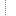

Описание Системы

Вход в систему
Раздел «Файл»
Раздел «Контроль»
Раздел «Отчеты»
Раздел «Справочники»
Описание операций
Общие элементы интерфейса
События
Документы
Сообщения-реестр
Сообщения к исполнению
Журнал ошибок
Отчеты
Отчеты – журнал регистрации событий